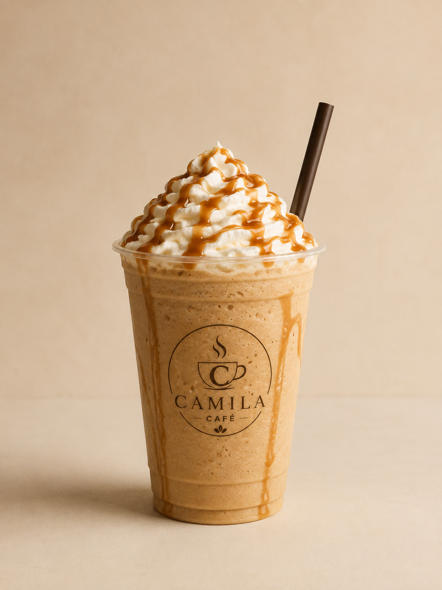
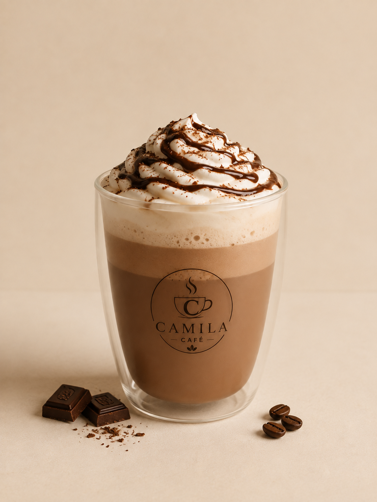
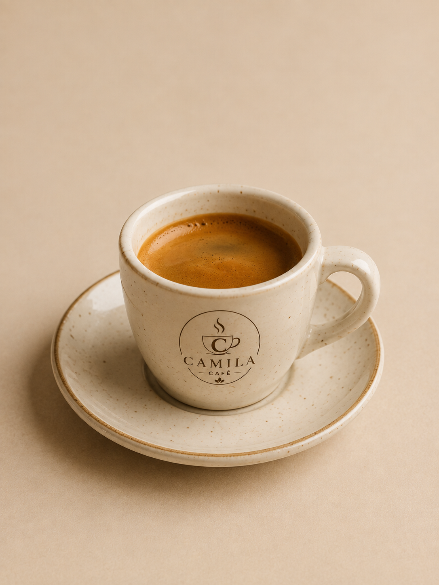

Frapucchino de Dulce de Leche
Una combinación cremosa de café, hielo, leche y dulce de leche, coronada con crema batida y salsa de dulce de leche para un sabor irresistible.

En Camila Café combinamos café de especialidad, pastelería artesanal y un ambiente pensado para estudiar, trabajar o simplemente desconectar. Cada detalle está diseñado para que disfrutes de una experiencia única, acompañada de los mejores sabores.

Combinamos ingredientes de calidad, atención personalizada y un ambiente cálido para que disfrutes desde el primer sorbo hasta el último.
Tenemos:

Una combinación cremosa de café, hielo, leche y dulce de leche, coronada con crema batida y salsa de dulce de leche para un sabor irresistible.

La mezcla perfecta entre espresso, chocolate y leche, ideal para quienes disfrutan de un toque dulce.

Un clásico preparado con granos seleccionados, de aroma intenso y sabor equilibrado para los amantes del café.